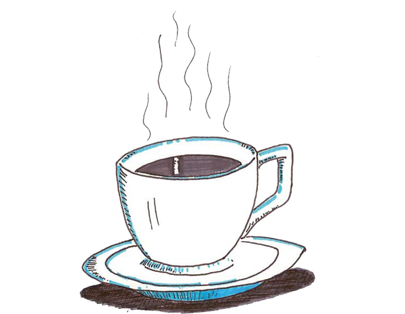
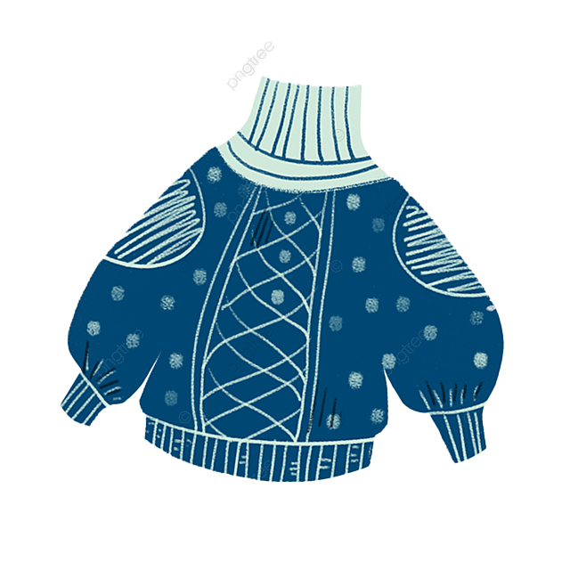

Hækling som afstresning

I en travl verden, hvor tid og stress ofte dominerer vores hverdag, søger mange af os efter måder at finde ro og afspænding. En af de mest effektive metoder er hækling, en ældgammel håndarbejdsteknik, der ikke kun giver mulighed for kreativ udfoldelse, men også tjener som et kraftfuldt værktøj til at lindre stress og fremme velvære.
Fordybelse i Øjeblikket
Hækling tilbyder en unik mulighed for at fordybe sig i nuet. Når man følger mønstre og skaber smukke strukturer med hver enkelt maske, forsvinder bekymringer og stress ofte i baggrunden. Det gentagne, rytmiske flow af hæklingen skaber næsten en meditativ tilstand, hvor sindet finder ro.
Skabelse og Selvudfoldelse
At skabe noget med dine egne hænder er i sig selv en givende oplevelse. Hækling giver dig mulighed for at tage kontrol over processen og se et projekt tage form fra start til slut. Dette skaber følelsen af opnåelse og styrker selvværdet.
Stressreduktion og Velvære

Når vi hækler, frigives endorfiner i hjernen, hvilket reducerer stressniveauet og fremmer en følelse af velvære. Den beroligende effekt af hæklingen hjælper med at regulere hjertefrekvensen og sænker blodtrykket, hvilket giver kroppen mulighed for at slappe af og genoplade.
Fællesskab og Samhørighed
Hækling kan også være en social aktivitet, hvor mennesker kommer sammen for at dele deres fælles interesse. Det skaber mulighed for at opbygge forbindelser, udveksle ideer og støtte hinanden i en positiv og støttende atmosfære.

Værktøj til Livslang Afspænding
En af de mest vidunderlige ting ved hækling er, at det er en færdighed, du kan tage med dig hele livet. Det er en pålidelig måde at finde trøst og afstresning i enhver situation.
I en hektisk verden er det vigtigt at finde sunde måder at håndtere stress på. Hækling er ikke kun en hobby, det er en terapeutisk praksis, der kan berige dit liv med skønhed, kreativitet og velvære. Så tag fat i din hæklenål og lad stressen smelte væk, mens du skaber noget smukt med dine egne hænder. Din krop og sjæl vil takke dig.